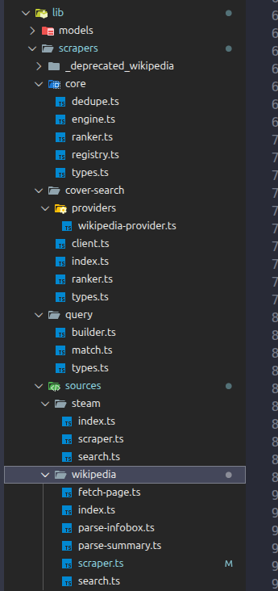
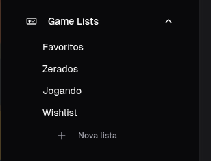
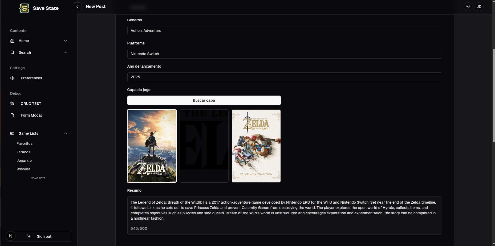
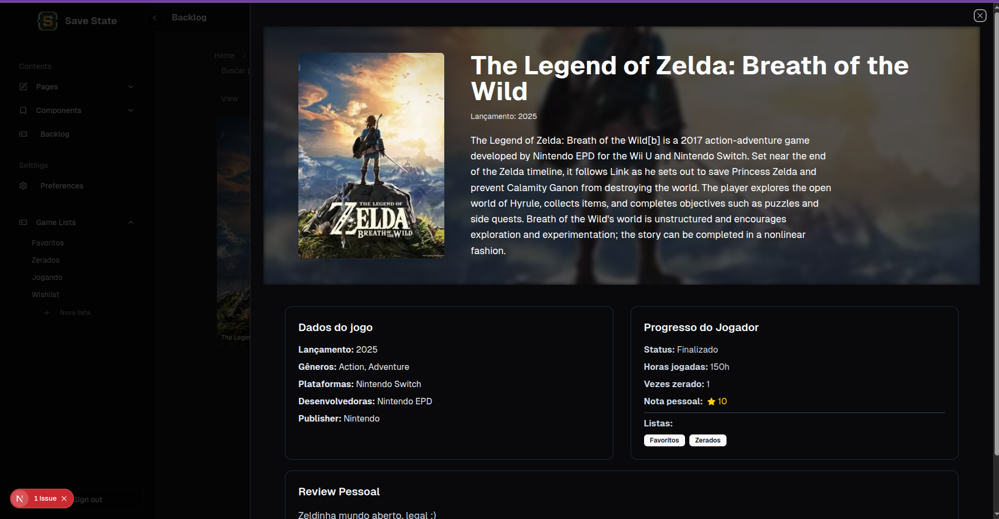

Como um erro de modelagem levou a uma refatoração completa da arquitetura e à criação de um sistema de scraping para automatizar o cadastro de jogos.
Recentemente finalizei a primeira grande etapa do Save State: o sistema de CRUD de jogos.
Mas chamar isso apenas de CRUD seria uma simplificação injusta. Não estamos falando de uma típica todo list de tutorial. Essa funcionalidade envolve modelagem de dados com relacionamentos, scraping de múltiplas fontes e preenchimento automático de formulários.

E tudo começou com um erro de arquitetura.
Antes de fazer um grande refactor no projeto, eu já tinha claro o que queria construir: um sistema onde usuários pudessem criar listas personalizadas de jogos e registrar sua experiência com cada um deles.
A ideia parecia simples: listas contêm jogos.

Mas esse modelo escondia um problema estrutural.
No banco de dados, um jogo só podia existir se estivesse dentro de uma lista. Isso criava algumas situações estranhas:
Demorei um pouco para perceber que o problema não estava na implementação. Estava na forma como eu estava pensando o relacionamento.
A solução acabou sendo uma inversão conceitual simples:
jogos devem conter listas, e não o contrário.
Depois dessa mudança, cada jogo passou a ter um array de IDs de listas às quais pertence.
Isso trouxe algumas vantagens imediatas:
Com essa base corrigida, implementar o restante ficou muito mais direto. Criei as rotas GET, POST, PATCH e DELETE para listas e jogos, completando o núcleo do CRUD.
Mas essa era apenas metade do desafio.
A entidade Game
foi pensada desde cedo com dois tipos de informação:

Algo mais ou menos assim:
{
"_id": "001",
"user_id": "001",
"game_data": {
// nome, developers, publishers, data de lançamento, etc
},
"player_data": {
// nota pessoal, vezes zerado, horas jogadas, review, listas
}
}
Os dados de player_data
obviamente vêm do usuário.
Mas os dados de
game_data
precisam vir de algum lugar confiável.
Inicialmente pensei em usar a IGDB API. Na prática, porém, os dados eram inconsistentes ou incompletos. Sem contar que a estrutura "não ortodoxa" das rotas da IGDB API (POST request pra tudo, inclusive onde deveria ser GET) não ajudavam nem um pouco. Que beleza 💩
Na primeira versão do sistema, a solução foi simples: o usuário preenchia quase tudo manualmente.
Funcionava… mas não era exatamente a experiência que eu queria criar.
Na nova versão do projeto, resolvi atacar o problema de outra forma.
Em vez de depender de uma única API, comecei a desenvolver um sistema de scraping com múltiplas fontes.

O sistema busca automaticamente:
Também implementei um sistema de busca de capas.
Com isso, o foco do aplicativo muda completamente. O usuário pode se concentrar no que realmente importa: registrar sua experiência pessoal com cada jogo.
Ao final dessa etapa, o Save State deixou de ser apenas uma ideia e se tornou uma aplicação funcional e escalável.
CRUD → Data modeling → Scraping → Data processing
O CRUD de jogos não é apenas um CRUD: ele já incorpora sistemas de apoio como scraping, tratamento de dados e ranking de fontes.
Ainda estou explorando as possibilidades de coletar grandes volumes de dados vindos de múltiplas fontes, algo que pode transformar o Save State em muito mais do que um simples registro de jogos zerados.
Por enquanto, estou apenas no primeiro capítulo dessa história — mas já estou ansioso para ver o projeto rodando em produção.